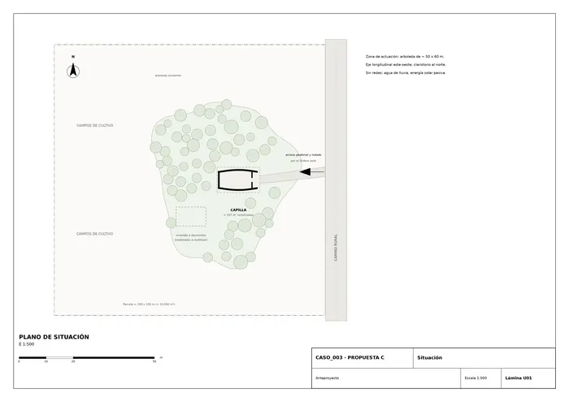
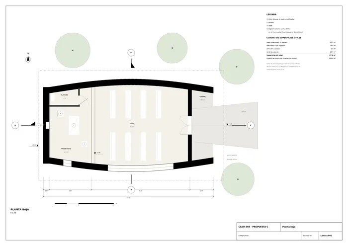
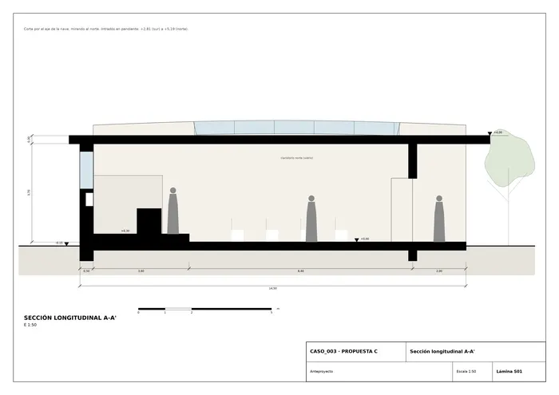
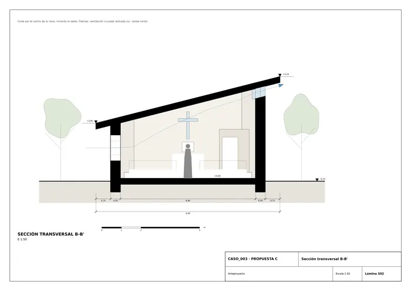
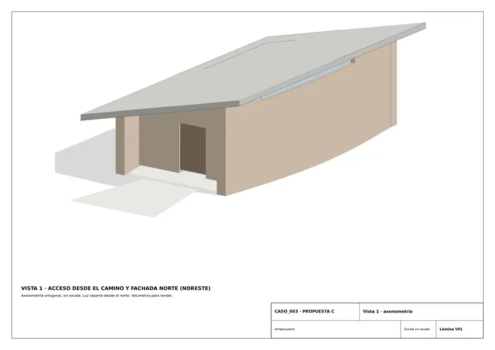
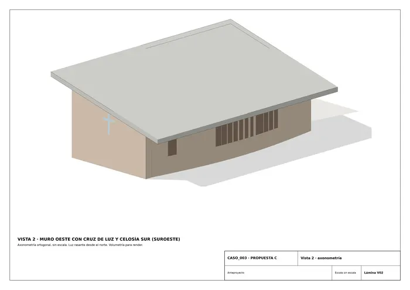

Caso 003 · Nicolás Campodonico · 2015 · equipamiento religioso
Una capilla que es, sobre todo, un muro grueso y curvo que recoge a la asamblea y la orienta hacia una cruz de luz. Dos muros de 50 cm, ligeramente abombados en planta (flecha de 70 cm), forman una nave en forma de lente que se abre al camino por el este a través de un umbral cubierto. Una cubierta de una sola agua, que sube hacia el norte, cierra el conjunto. Todo el cuerpo del edificio sale del desmontaje de la vivienda centenaria: sus ladrillos, mampuestos, vigas y tejas forman los muros, el altar y la cubierta.
Del boceto se retiene la línea gruesa y curva (convertida en los dos muros abombados), el bloque rectangular a un lado (convertido en el testero oeste con presbiterio y almacén) y la nube de puntos y manchas (la arboleda, que se conserva entera: el edificio ocupa la huella de la vivienda sin talar). El símbolo del norte condiciona la sección: la cubierta sube al norte para abrir un claristorio hacia el sol. Se descarta la geometría libre del boceto y se opta por una figura simple y construible con material reutilizado.
Eje este-oeste. Acceso peatonal y rodado desde el camino (lindero este) por un sendero de unos 25 m hasta el umbral (2 m de fondo, bajo cubierta). Una puerta de dos hojas de 1,60 m da paso a la nave: 4 filas de bancos a cada lado de un pasillo central de 1,20 m (32 plazas + 8 de pie o taburetes). Al oeste, el presbiterio (+0,30 m) con altar de piedra, ambón y sede; detrás, en el muro, el sagrario (nicho) y una cruz de luz vidriada. En el ángulo noroeste, un almacén-sacristía de 3,3 m² para objetos litúrgicos y bancos. No se proyecta aseo: no hay saneamiento y el uso es ocasional.
| Espacio | Programa | Propuesta |
|---|---|---|
| Celebración (nave) | a definir | 55,2 m² |
| Presbiterio + sagrario | a definir | 18,5 m² |
| Umbral de acceso | a definir | 10,7 m² |
| Almacén-sacristía | a justificar | 3,3 m² |
| Superficie útil | 87,6 m² | |
| Superficie construida (huella con muros) | 60–120 m² | 106,8 m² |
Asamblea: 32 sentados (rango de 25–40). Alturas libres de 2,8 m (sur) a 4,7 m (norte).

Situación
Planta baja
Sección longitudinal
Sección transversal
Vista 1
Vista 2Memoria de la propuesta tal como la entregó el sistema. Se han omitido las notas internas del proceso (revisiones, control de reconocimiento y referencias a archivos de trabajo).